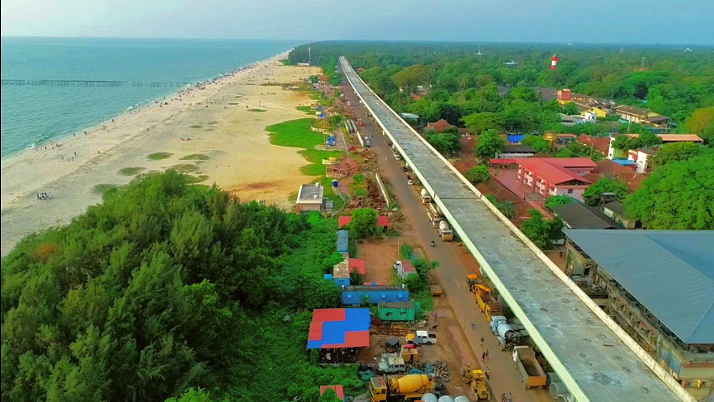
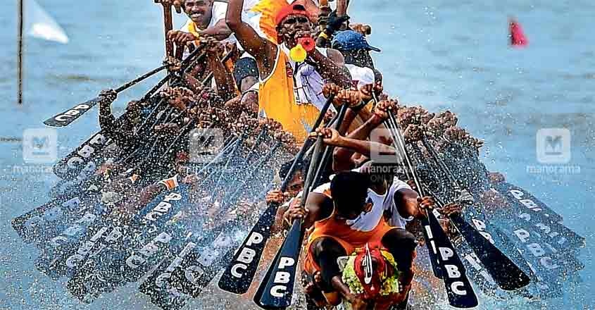

Alappuzha Backwaters

The Alappuzha Backwaters, a captivating network of interconnected canals, lagoons, and lakes in the picturesque town of Alappuzha, Kerala, offer a serene and enchanting experience. Often referred to as the "Venice of the East," these backwaters provide a unique opportunity to witness the idyllic beauty of Kerala's coastal landscape. Traditional houseboat cruises navigate through the waterways, offering visitors a peaceful journey surrounded by lush greenery, swaying palm trees, and glimpses of rural life along the banks. The reflections of the coconut palms and the vibrant hues of the landscape create a mesmerizing ambiance. The Alappuzha Backwaters are not merely a scenic spectacle but also serve as a lifeline for the local communities, reflecting the cultural and economic significance of this intricate water network.
Alappuzha Beach
Alappuzha Beach, nestled along the Arabian Sea in Alappuzha, Kerala, is a serene coastal destination. With golden sands and a palm-fringed promenade, it offers an ideal setting for relaxation. Visitors can enjoy leisurely strolls, feel the gentle sea breeze, and observe local fishermen at work. The historic Alappuzha Lighthouse stands as an iconic landmark, providing panoramic views. The beach comes alive during the annual Alappuzha Beach Festival, featuring cultural events and water sports. Alappuzha Beach is a popular destination, combining scenic beauty with cultural vibrancy, offering a tranquil escape in the heart of Kerala's backwater region.

Nehru Trophy Boat Race
The Nehru Trophy Boat Race, held annually in Punnamada Lake in the picturesque town of Alappuzha, Kerala, is a vibrant and thrilling event that draws thousands of spectators. This iconic snake boat race, inaugurated in 1952 and named after the first Prime Minister of India, Jawaharlal Nehru, showcases the rich tradition of Kerala's water sport. The race features gracefully crafted Chundan Vallams, traditional longboats, manned by teams of rowers in a spirited competition. The event is a celebration of the state's cultural heritage and community spirit, with teams representing different villages participating in a display of synchronized rowing skills and teamwork. The electrifying atmosphere, the rhythmic beats of the paddles, and the enthusiastic cheers from the crowd create a spectacle that captures the essence of Kerala's unique sporting and cultural legacy.